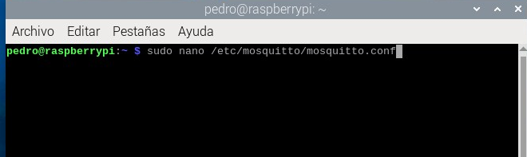
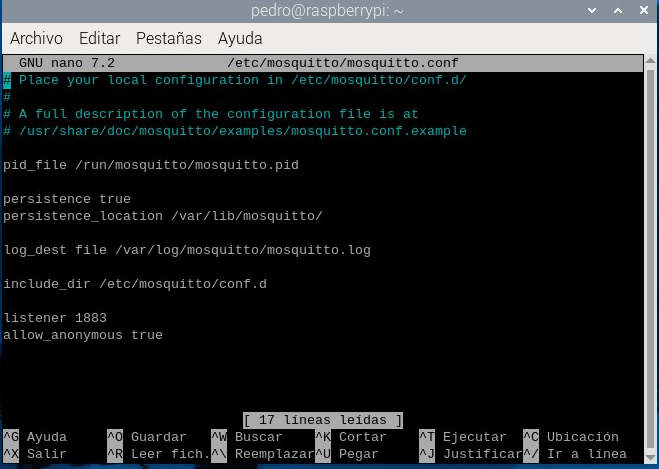
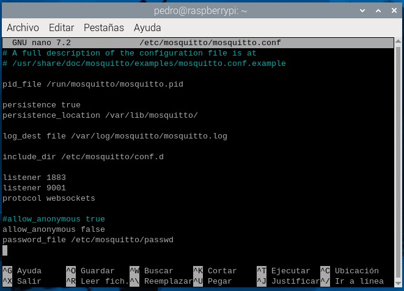
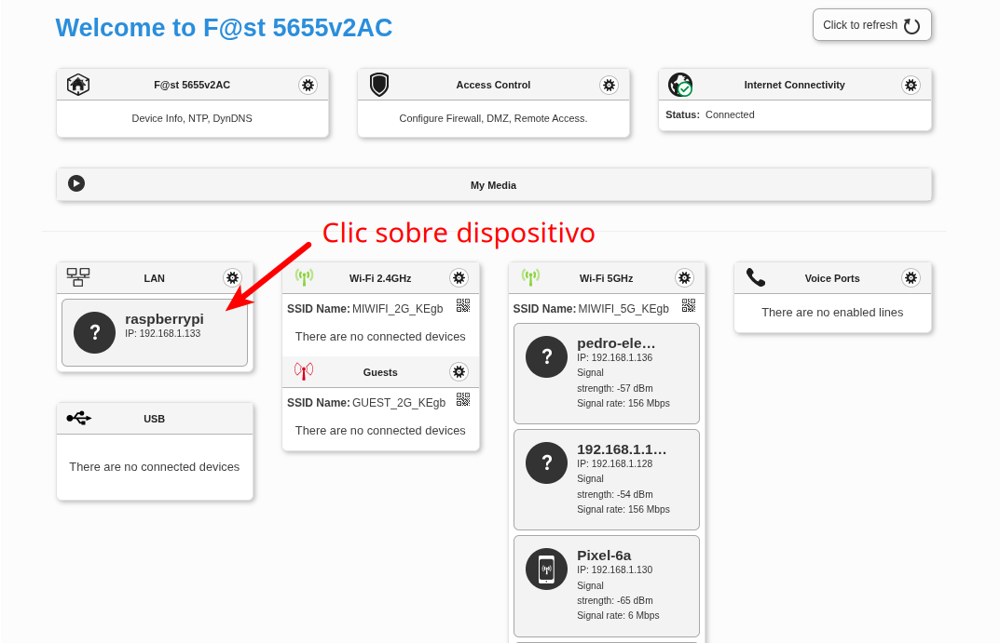
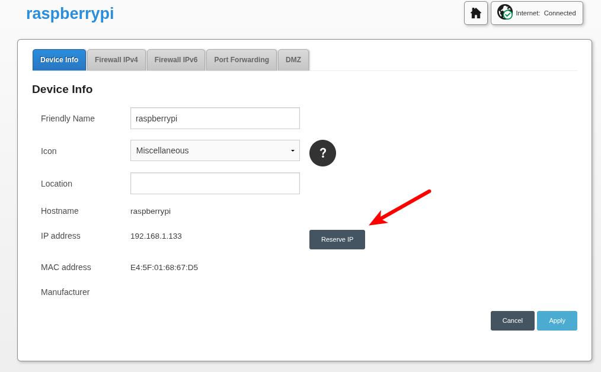
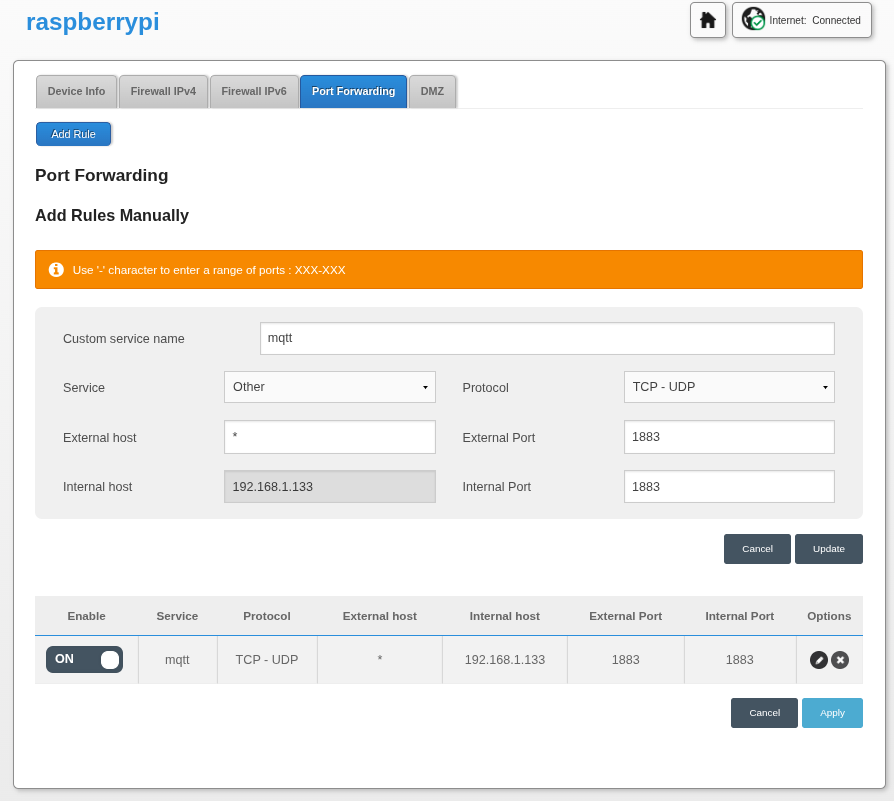
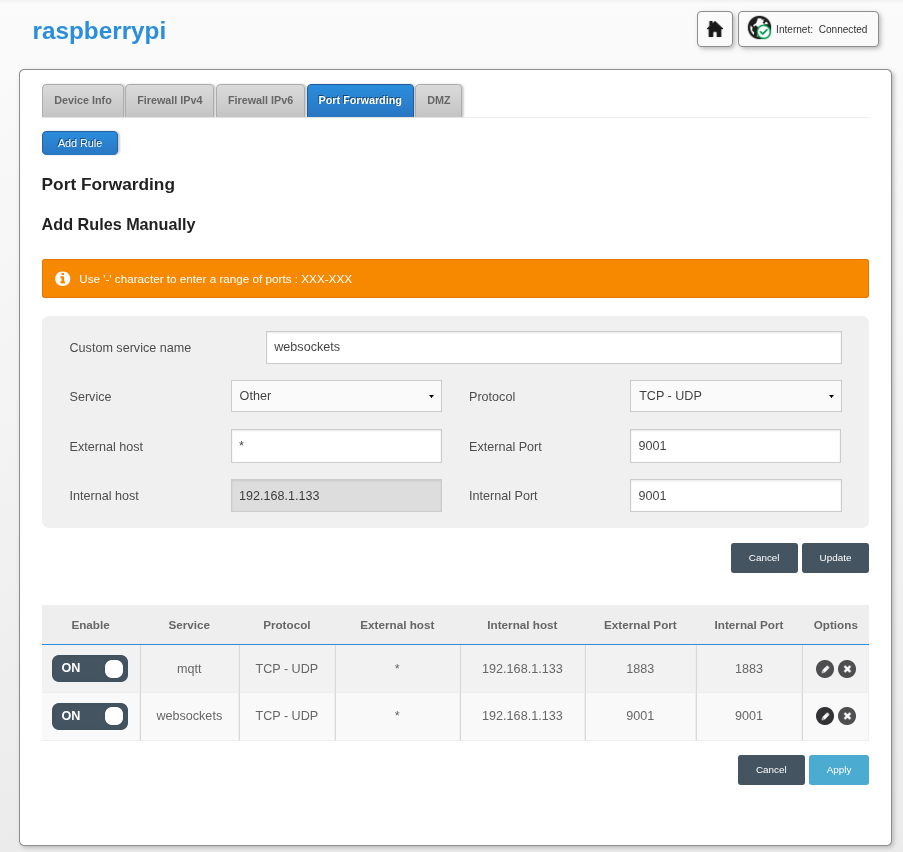

MQTT
MQTT (Message Queuing Telemetry Transport) es un protocolo de comunicación que permite que los dispositivos hablen entre sí de forma ligera y rápida, ideal para el Internet de las Cosas (IoT). Las comunicaciones funcionan entre dispositivos funcionan mediante publicaciones de mensajes con temática y valores y subscriciones a los mismos de otros dispositivos que lo reciben y procesan.
¿Que es mqtt?: por Luis llamas
Brokers (servidores) funcionales (ya montados)
- Broker Pedro Ruiz: casapedro.synology.me, usuario: anonimo, contraseña: anonimo.
- Broker Hivemq: broker.hivemq.com, sin usuario (en blanco).
Montaje de servidor o broker MQTT
El servidor de mqtt lo vamos a instalar en una raspberry pi, en concreto se llama mosquitto, lo he realizado siguiendo minuciosamente los pasos explicados en la web de Luis Llamas. https://www.luisllamas.es/como-instalar-mosquitto-el-broker-mqtt/.
Instalación de Mosquitto
Para ello en un terminal de raspberry os:
sudo apt updatesudo apt upgrade
Con estás órdenes actualizamos la base de datos de paquetería.
sudo apt install mosquitto mosquitto-clients
Ahora instalamos el servidor y las herramientas de cliente.
Para verificar el estado del servidor puedes usar la siguiente orden;
sudo systemctl status mosquitto
Configuración del servidor
Además hay que modificar el archivo de configuración de mosquitto, en mi caso con el editor de texto nano:

Al mismo añadimos las líneas:
listener 1883
allow_anonymous true

Esto permite al servidor atender al puerto 1883 (el de mqtt) y permitir el uso del mismo a usuarios anónimos.
Configuración de mosquitto para autenticación
También podemos añadir al servidor usuarios y contraseñas, e incluso no permitir el uso a usuarios anónimos (sin identificación).
En la web de GIRNI lo explican con detalle.
Debemos añadir en el fichero de configuración mosquitto.conf :
allow_anonymous falsepassword_file /etc/mosquitto/passwd
y comentar para que no tenga efecto la línea:
#allow_anonymous true
La primera línea no permite usuarios anónimos y las segunda indica dónde está el fichero de usuarios y contraseñas cifradas.
El fichero de configuración quedaría de la siguiente manera:

También hemos añadido las líneas:
listener 9001
protocol websockets
La primera hace que el servidor pueda escuchar peticiones por el puerto 9001 y la segunda habilita el protocolo websockets, este protocolo con su puerto (9001) permiten que páginas webs se puedan comunicar con servidores mqtt. En el router habrá que abrir el puerto 9001 y redireccionarlo a la ip local de la raspberry pi.
Para añadir el fichero de usuarios y contraseñas y el primer usuario:
sudo mosquitto_passwd -c /etc/mosquitto/passwd usuario
con la opción -c crea el fichero y borra el anterior si lo hubiese.
para la creación los demas usuarios sin la opción -c:
sudo mosquitto_passwd /etc/mosquitto/passwd nuevousuario
Para comprobar los usuarios del servidor mosquitto usamos:
cut -d: -f1 /etc/mosquitto/passwd
Configuración en router
En el enrutador lo primero que debemos hacer es abrir las características de mi dispositivo en la red.

Ahora debemos reservar una ip local para el dispositivo.

Posteriormente haremos una redirección del trafico mqtt al puerto 1883 del router a la ip local del servidor. Está opción está en port forwarding.

Además si queremos trabajar desde webs sobre el servidor debemos abrir el puerto 9001 y redireccionarlo a la ip local del servidor (raspberry pi). De esta forma estamos haciendo posible la conexión mediante el protocolo websockets de páginas webs y el servidor mqtt.
